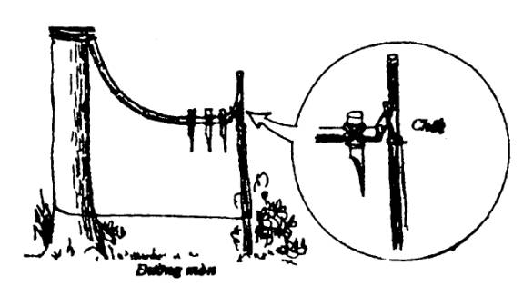
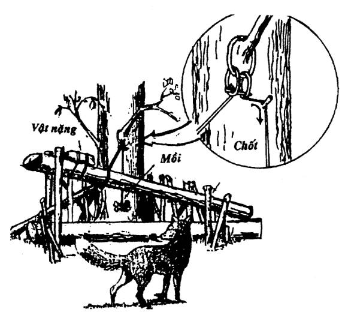
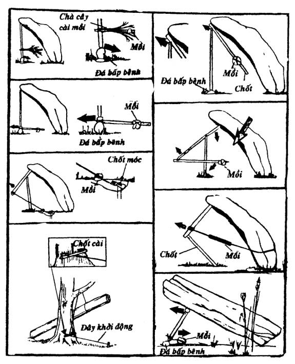
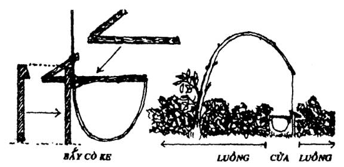
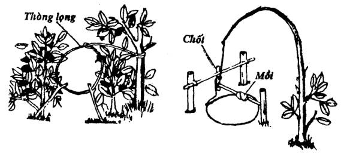
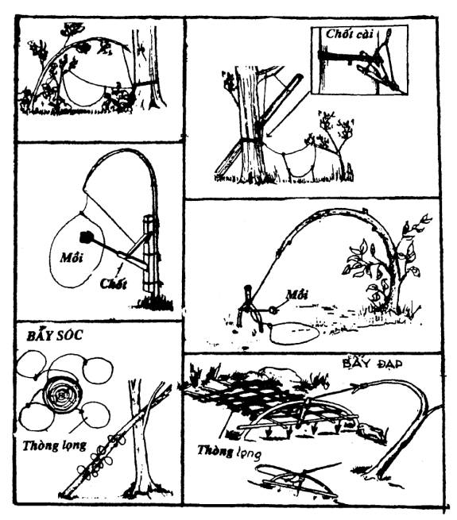
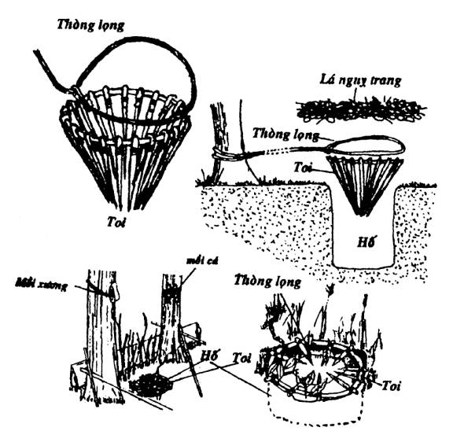
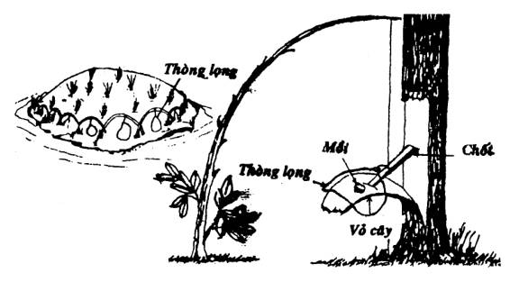
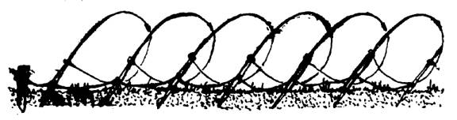

ĐẶT BẪY
Đây có lẽ là phương pháp mưu sinh xưa nhất trong lịch sử của nhân loại. Từ thưở còn săn bắn hái lượm, con người đã biết đánh bẫy. Vì bẫy là một công cụ tự động bắt thú, giúp cho con người có thêm nguồn thực phẩm, trong khi con người còn dành thời gian cho những việc khác.
Từ các loại bẫy thô sơ thời cổ đại cho đến các loại bẫy tinh vi hiện nay, tất cả đều dựa trên một nguyên tắc cơ bản từ xa xưa, cho nên chỉ cần hiểu nguyên lý vận hành của một vài cái bẫy, là các bạn cũng hiểu các cài đặt các bẫy khác. Tuy nhiên, không phải cứ có bẫy tốt, tinh vi, là chúng ta đánh được thú. Không phải cứ sắm cần câu đắt tiền là chúng ta câu được cá,… mà chính ở bản thân chúng ta phải có kinh nghiệm và am hiểu tập tính cũng như thói quen của các loài động vật, nhất là những loài mà chúng ta dự tính đánh bắt.
Thật ra, cũng chẳng có gì là khó khăn lắm, nếu các bạn chịu khó quan sát, tìm hiểu, lý giải các loại dấu vết, mạnh dạn bắt tay thực hành, cộng thêm một vài lần… thất bại, thì chỉ trong vòng một thời gian ngắn, các bạn cũng sẽ tích luỹ được một số kinh nghiệm.
Có rất nhiều loại bẫy khác nhau dành cho từng loại chim thú khác nhau. Có loại bẫy giết chết con mồi, có loại bẫy bắt sống. Có loại dành cho thú lớn hay thú dữ, có loại dành cho thú nhỏ. Có loại phải dùng mồi nhử, có loại không. Có loại cài xong chúng ta chỉ phải đi thăm một hay hai ngày một lần, nhung cũng có loại chúng ta phải chủ động đứng nhìn để khởi động bẫy… các bạn phải tùy theo hoàn cảnh, tình huống,… mà chọn cách đặt bẫy, để không hao tốn công sức nhiều mà hiệu quả cao.
CHỌN NƠI ĐẶT BẪY
Hầu hết các loại thú đều có hai môi trường sinh sống. Thí dụ: Rừng rậm là nơi trú ẩn và đồng cỏ là nơi kiếm ăn. Hoặc thảo nguyên là nơi sinh sống và ao hồ là nơi uống nước… Do đó, các bạn nhất thiết phải tìm cho được con đường mà chúng thường xuyên lui tới để ăn uống, săn mồi, nghỉ ngơi (có nhiều loại thú lui tới chỉ bằng một con đường mòn nên rất dễ nhận thấy).
Vào đầu mùa mưa, cỏ non mọc nhiều nên các loài thú di chuyển kiếm ăn nhiều hơn. Đây là thời điểm đánh bẫy hiệu quả nhất. Còn vào mùa khô, các bạn nên tập trung các giàn bẫy ở những vùng có nước.
Tuy nhiên, các loài thú hoang dã rất nhút nhát và cảnh giác cao, nhất là những vùng bị săn bắn nhiều như ở Việt Nam và một số nước trên thế giới. Nếu các bạn không ngụy trang kỹ và để cho thời gian làm mất hơi người ở nơi đặt bẫy, thì khó lòng mà đánh lừa được các con thú… Cho nên khi đặt bẫy, các bạn không nên cày xới hay dẫm đạp nhiều làm cho hơi người lưu lại quá lâu.
Các bạn cũng không nên quá tin vào những công thức của sách vở, tài liệu của nước ngoài. Vì ở đó thú hoang được bảo vệ và gần gũi với con người, cho nên rất dễ đánh bắt..
Nếu trên con đường mòn của thú đi lại mà có một thân cây ngã nằm ngang từ lâu thì rất tốt. Các bạn đặt hai bên thân cây (trên con đường mòn) mỗi bên một bẫy. Nếu con thú nghi ngờ bên này, nó sẽ rướn mình để nhảy sang bên kia thì cũng bị dính.
Dưới đây là những nơi mà các bạn nên cài đặt bẫy để cho có hiệu quả cao:
- Những đường mòn xuyên qua vành đai bụi rậm dẫn đến ao, hồ, suối, nguồn nước, rừng rậm, đầm lầy,…
- Những hẻm núi.
- Những nơi có nguồn thức ăn phong phú.
- Dọc theo hai bờ sông suối.
- Những vũng nước còn đọng lại trong mùa khô.
Nhưng tốt nhất là các bạn nên rấp luồng.
Rấp luồng:
Vào đầu mùa mưa, các bạn chọn những vùng có nhiều chim thú qua lại, chặt nhiều cành cây cắm thành một hàng rào zic zắc thật dài, càng dài càng tốt (có nhiều người rấp một luồng dài hơn 10 cây số), mục đích của luồng là làm cho con thú không dám vượt qua hàng rào này mà ép chúng nó phải vào góc. Ở mỗi góc zic zắc, các bạn trổ một cửa và gài vào đó một cái bẫy (tuỳ theo kinh nghiệm cũng như loại thú để chúng ta chọn bẫy cho thích hợp). Một luồng như vậy, có khi phải cần đến hàng trăm cái bẫy.
CÁC LOẠI BẪY THÚ
BẪY HẦM
Khi cần đánh bắt thú lớn mà thiếu công cụ trong tay, bẫy hầm là một loại bẫy hiệu quả nhất.
Các bạn chọn nơi mà con thú thường qua lại hay buộc phải qua lại như hẻm núi, đường mòn, luồng,… để đào một cái hầm rộng khoảng 1.5m x 1.5m (có thể rộng hơn hay hẹp hơn tuỳ theo địa thế và loài thú mà chúng ta định đánh bắt). Sâu khoảng hơn 2 mét, đáy hơi hẹp để cho thú khó lòng xoay xở. Bên trên các bạn gác ngang dọc nhiều cây nhỏ rồi phủ cỏ và lá cây lên. Trải một lớp đất mỏng trước khi ngụy trang bằng lá khô (nếu chung quanh phủ đầy lá khô). Vì đào xới nhiều cho nên loại bẫy này cần một thời gian khá lâu, hoặc qua một vài cơn mưa làm mất hơi người thì mới có kết quả. Khi thú bị sập hầm, các bạn có thể giết bằng lao hay đưa lên bằng thòng lọng.
BẪY ĐÂM (THÒ, LAO CHÔNG)
Đây là loại bẫy cực kỳ nguy hiểm, dùng để giết chết con mồi, cho nên khi cài đặt loại bẫy này, các bạn phải chắc chắn rằng: đây là nơi không có dân cư qua lại, và nên để những dấu hiệu báo nguy cho mọi người và cho chính cả bạn (nếu các bạn có nhiều người thì không nên cài loại bẫy này).
Có hai loại bẫy đâm thông dụng:
1. Loại dùng chính sức nặng của con thú
2. Loại dùng lực tác động bên ngoài
Loại dùng chính sức nặng của con thú
Đơn giản nhất trong loại này là hầm chông (tức kết hợp giữa bẫy hầm và chông). Sau khi đào hầm xong (không cần sâu lắm) các bạn cắm một vài cây chông. Khi thú sụp hầm sẽ bị chông đâm xuyên qua người.
Loại dùng lực tác động bên ngoài
Các bạn chọn một cây tre đực già (loại tre gần như đặc ruột) để làm cần bật, có gắn một vài mũi lao như hình minh họa. Các bạn có thể cài từ trên đập xuống hay từ một bên phạt ngang qua. Điều chỉnh cao thấp làm sao cho vừa tầm với con thú.

BẪY SẬP - BẪY ĐÈ
Có lẽ đây là một loại bẫy kém hiệu quả đối với những con thú lớn, vì thường loại bẫy này cần phải có mồi nhử, mà thú lớn thì rất cảnh giác với các loại mồi lạ. Nhưng cũng khá hiệu quả đối với các loài thú nhỏ như chuột, sóc, nhen,…
Bẫy được làm bằng những vật năng như đất, đá, lóng cây,… để đè chết con mồi. Bẫy thường được cài đặt nơi thú thường lui tới kiếm ăn nên nhất thiết phải có mồi.


BẪY THÒNG LỌNG
Người ta dùng nút thòng lọng để làm nhiều loại bẫy khác nhau, có hiệu quả rất cao, trong đó, giản dị và hữu hiệu nhất là bẫy cò ke (xem hình vẽ). Đây là một loại bẫy rất bén (nhạy) bất kỳ loài chim thú nhỏ nào đi dưới đất (kể cả loài bò sát) đều có thể bị dính cả.

Bẫy thòng lọng rất đa dạng. Có loại dùng cần bật. Có loại dùng chính sức trì kéo của con thú. Có loại kèm thêm mồi nhử. Có loại siết cổ. Có loại siết chân.


Hoặc dùng thòng lọng kết hợp với vòng hom bằng cây hay bằng thép. mục đích của hom không hẳn là để giữ chân thú lại, mà để cho những sợi thòng lọng bằng cáp kịp thời siết chân con mồi để không bị sẩy.

Bẫy thòng lọng còn dùng để đánh bắt các loại chim như các kiểu sau đây:

Dò (nho)
Dùng để bẫy chim. Được làm rất công phu bằng những sợi mây cực dẻo (mây rã). Kết hợp với những sợi thòng lọng làm bằng các loại dây mảnh và chắc (dây gai, tơ tằm, …) Được cài đặt trên những vùng các loại chim hay qua lại kiếm ăn. Dò có nhiều cỡ: lớn, nhỏ, dài, ngắn,… để đánh bắt các loại chim khác nhau.
